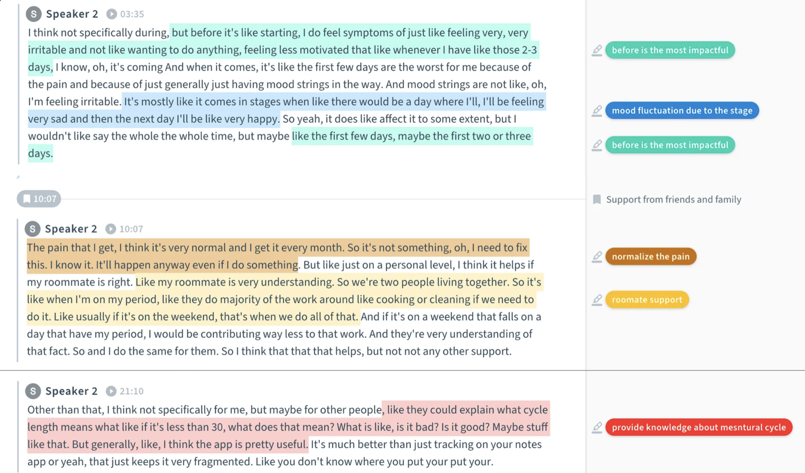
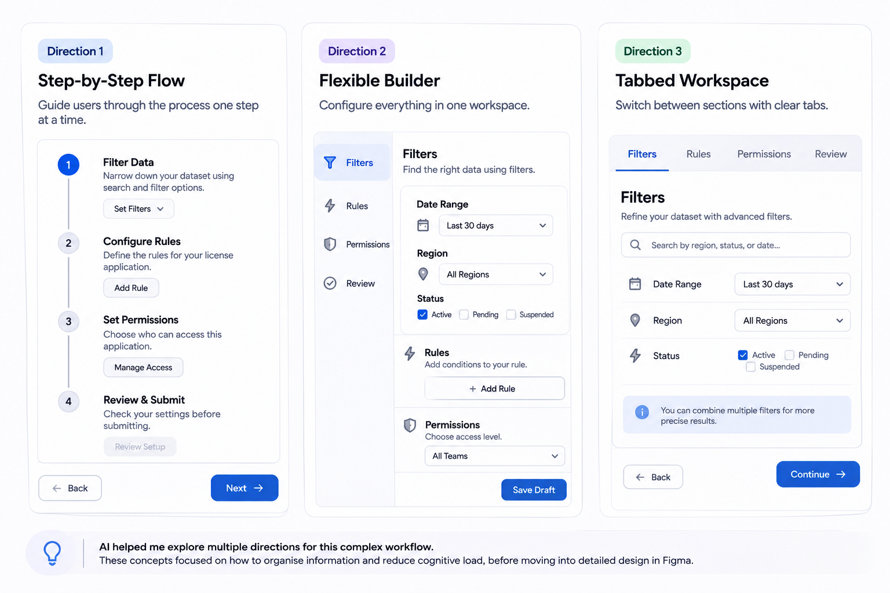
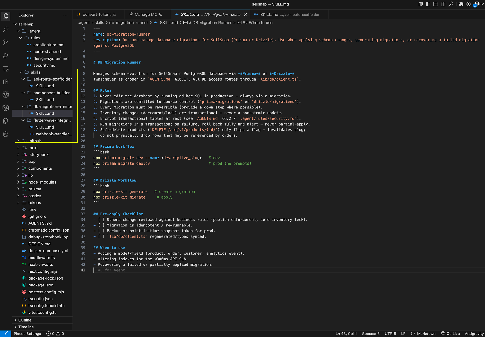

How I Use AI
The Work I Do With AI
AI is an integral part of how I work now. Here are some of the ways I use it, and the places where I trust my own judgment instead.
I built my portfolio site with
 &
&

This portfolio site is built in Antigravity, with OpenCode as my coding agent. It is plain HTML, CSS and JavaScript rather than a framework, but the pieces behave like a small design system: one navigation with its own active-state indicator, a reusable lightbox, scroll reveals, and case-study layouts that share the same typography, spacing and page rules. I set the structure and the visual language, then worked with the agent to write the markup and styles page by page — reviewing each result in the browser, correcting what drifted, and deciding what was worth keeping. Because the components are genuinely shared, adding a page or a navigation item happens once in the system instead of being rebuilt by hand everywhere. I move between the two depending on the task.
AI’s part
- Writing the markup and CSS for each page against the existing patterns
- Extending shared pieces — navigation, lightbox, reveals — across pages
- Producing variations fast enough to compare in the browser
My part
- Page structure, typography, spacing, and interaction decisions
- Defining the shared components every page is built from
- Reviewing each page, correcting drift, and holding the quality bar

I use AI to structure my research
Research on regulatory and financial products produces a lot of unstructured material: interview notes, screenshots of legacy tools, policy documents, internal review transcripts. I use AI to make that material easier to hold in my head — grouping notes by theme, summarizing what a document actually requires, comparing how two people described the same workflow, and drafting the next round of questions. In an unfamiliar problem space it is also a fast way to surface vocabulary and areas I have not thought to ask about.
The discipline is that everything it produces is a hypothesis. A theme only becomes real to me when I can point to the quotes behind it. So I go back to the source material, check the summary against what people actually said, and treat the model’s reading as one interpretation among several. The questions it helps me prepare are for real conversations, not a replacement for them.
What it buys me is time and coverage. The first pass through a messy pile of material is faster, which leaves more room for the work only I can do: talking to people, testing my reading of the problem, and deciding what the evidence supports.
AI’s part
- Clustering notes and transcripts into candidate themes
- Summarizing long policy and research documents
- Drafting question sets and alternative interpretations
My part
- Running the interviews and holding the context
- Verifying themes against quotes and evidence
- Deciding what the research actually means

I use AI to explore multiple design directions
Before I commit to a direction, I want to have seen more than one.
For a complex workflow — filtering a large dataset, configuring a multi-step rule, deciding how much of a permission system to expose at once — I use AI to rough out three or four structural directions before I open Figma. These are deliberately cheap: wireframe-level, focused on how information is organized and how much the user has to hold in their head, not on visual polish.
Comparing them side by side exposes what a single direction hides. A two-pane layout may scan faster but fail on small screens; a guided flow may handle edge cases cleanly but make a routine task feel heavy. The model can generate the alternatives quickly, but it cannot tell me which trade-off is right for this product and these users. That judgment comes from the requirements, the evidence, and the constraints we actually have.
The strongest direction is the one that goes into Figma. Refinement, component work, and detailed states all happen there, by hand. AI expands the solution space; it does not decide where to land.

I have AI assume the role of an expert to critique my work
The most useful thing I do with AI is let it argue with me — early, before the work is polished and before it reaches a stakeholder.
I ask AI to review my ideas from different perspectives, such as a target user, product manager, or marketing lead. I can share an early concept, a rough idea, or simple wireframes and get feedback from each point of view. This helps me spot problems, challenge my thinking, and improve the idea before sharing it with real stakeholders.
AI’s part
- Reading a flow from several stakeholder perspectives
- Naming missing states, edge cases, and ambiguities
- Producing a fast, broad first critique
My part
- Deciding which critiques are valid for this product
- Weighing suggestions against user evidence and constraints
- Owning the iteration and the final design

I create custom AI skills to make my workflow consistent and repeatable
A good prompt is not a workflow. What makes AI consistently useful is the system around it.
I create custom AI skills with my own rules for writing, naming, and structuring things. This helps AI produce consistent results that match my style, rather than generic content I have to rewrite. It also makes my workflow easier to repeat and saves time across projects.
AI’s part
- Following my custom rules for writing, naming, and structure
- Applying the same conventions each time instead of defaulting to generic output
- Producing results that are closer to my style and easier to reuse
My part
- Defining the rules, voice, naming, and structure inside each skill
- Deciding what consistency looks like across projects
- Reviewing the output and refining the skill whenever it drifts
-
01
Define rules
Writing, naming, and structure I want repeated
-
02
Save the skill
The rules live in one reusable place
-
03
Apply
AI works from the skill, not a blank prompt
-
04
Review
Output checked against my style and conventions
-
05
Refine
Drift corrected in the skill for the next project
The skill is the repeatable part: each project reuses the same rules, and only the drift gets edited.

I design systems that coordinate work across autonomous agents
I stopped treating AI as one prompt and started designing it as a small team of agents with clear roles.
I use a team of agents to audit a product's core flows from start to finish. One navigates the experience and captures each screen. Another evaluates the screens against Nielsen's usability heuristics and my own review checklist. A third prioritizes the findings by severity, while the fourth turns them into actionable reports, pairing each issue with a screenshot and a suggested fix. I review the findings, filter out false positives, and decide which issues deserve attention. The agents handle the initial investigation and documentation. I bring the judgment, context, and design decisions.
AI’s part
- Classification where the criteria are genuinely fuzzy
- Drafting and refining the evaluation logic
- Speeding up the build of the pipeline itself
My part
- Defining what “relevant” means
- Reviewing the shortlist and making the decision
- Tuning the criteria when the output drifts
-
01
Discover
Sources and role searches I already trust
-
02
Crawl
Collect and normalize postings into one format
-
03
Evaluate
Score each role against defined relevance criteria
-
04
Qualify
Drop weak matches; keep what clears the bar
-
05
Notify
Send the shortlist to my inbox on a schedule
Schematic of DesignRadar as built: a scheduled backend pipeline with no user-facing UI.
A scheduled run — terminal output or email
Replace with a screenshot of a real run or a sample of the notification email.